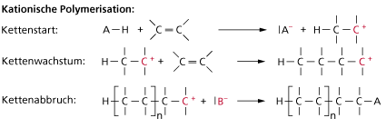
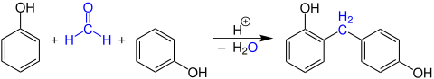
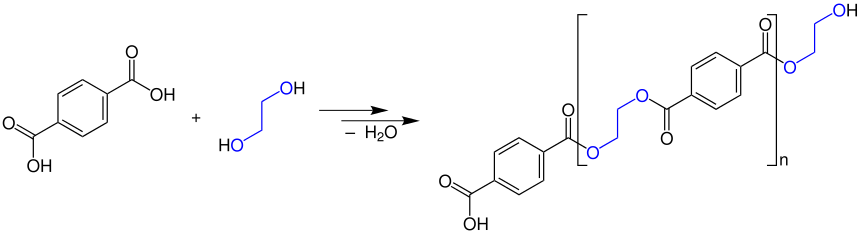

Aminosäuren sind die Bestandteile der Proteine. Sie sind für den menschlichen Körper extrem wichtig. Dabei gibt es 8 essentielle, d.h. vom Körper nicht produzierbare Aminosäuren.
Das C-Atom, an welchem die Aminogruppe hängt, wird auch als ɑ-Kohlenstoffatom bezeichnet. In der Natur treten in größten Teilen L-ɑ-Aminosäuren auf, d.h. die Aminogruppe ist wie im Beispiel von Glycin (in der Fischer-Projektionsformel) nach links gedreht.
Aminosäuren bilden ein Gitter ähnlich dem des Kochsalzes.
Da sie jedoch nicht als Ionen vorliegen, müssen sich die Ladungen im Molekül verschieben und es entsteht ein Zwitterion. Die Carboxylgruppe dient innerhalb des Moleküls als Protonendonator, die Aminogruppe als Protonenakzeptor. Durch die zwitterionische Struktur reagieren Aminosäuren als Ampholyte.
Der Isoelektrische Punkt ist der Punkt, an welchem die Aminosäuren (maximal) als Zwitterion vorliegen. Er ist daher charakteristisch für jedes zwitterionische Molekül. Er lässt sich durch die folgende Formel berechnen:
pH = (pKs1 + pKs2)÷2
Die beiden $ pK_s $ Werte lassen sich durch ablesen einer Titrationskurve bestimmen. Der erste Punkt liegt dabei bei der Hälfte zum ersten Äquivalenzpunkt, der zweite auf der Mitte zwischen den Äquivalenzpunkten. Daher ist der isoelektrische Punkt gleich dem ersten Äquivalenzpunkt.
Als Peptidbindung bezeichnet man die Bindung zwischen der Carboxylgruppe einer Aminosäuren und der Aminogruppe einer anderen Aminosäuren.

Alle an einer Peptidbindung beteiligten Atome liegen in einer Ebene, was sich durch Mesomerie erklären lässt. Zudem ist die C − N-Bindung verkürzt, daher könnte man meinen, dass die Bindungselektronen zwischen ihnen delokalisiert sind und es sich um eine Hybridform einer Einfach- und Zweifachbindung handelt. Außerdem sind die bindenden Atome sp2 hybridisiert, was die Bindung stark und nicht drehbar macht.
Es gibt mehrere Nachweisreaktionen um das Vorhandensein von Aminosäuren fest zu stellen.
Diese Reaktion beruht darauf, dass die Proteine an ihren Stickstoff-Atomen mit Kupfer(II)-Ionen farbige Komplexverbindungen bilden
Diese Nachweisreaktion dient nur zum Nachweis von aromatischen Aminosäuren (also welchen mit Benzolring). Bei der Zugabe von Salpetersäure (HNO3) findet eine Nitrierung des Benzolrings statt.
Man unterscheidet bei den Proteinen zwischen der Primär-, Sekundär-, Tertiär-, und Quartiärstruktur:
Die Primärstruktur beschreibt die Abfolge der Aminosäuren innerhalb eines Proteins. Man notiert diese so, dass die letzte Aminogruppe (N-terminales Ende) ganz links, sowie die letzte freie Carboxylgruppe (C-terminales Ende) ganz rechts stehen.
Die Sekundärstruktur beschreibt die räumliche Struktur eines Proteins. Dabei gibt es zwei Möglichkeiten: α-Helix oder β-Faltblatt.
Die α-Helix entsteht dabei durch intramolekulare Kräfte, genauer den Wasserstoffbrücken zwischen den Peptidbindungen. Die Aminosäurereste zeigen bei der immer rechtsgängigen Helix nach außen.
Die β-Faltblatt-Struktur entsteht durch intermolekulare Kräfte, nämlich Wasserstoffbrücken zwischen nebeneinanderliegenden Peptidketten. Dabei stehen die Aminosäurereste abwechselnd nach oben und unten.
Die Tertiärstruktur beschreibt die räumliche Anordnung aller Atome innerhalbe eines Proteins. Es gibt einige für die Ausbildung der Tertiärstruktur bedeutsame Bindungen:
Echte Bindungen
Zwischenmolekulare Kräfte
Die Quartiärstruktur beschreibt das Zusammenwirken und die Verbindung mehrerer Proteinketten durch die bei der Tertiärstruktur genannten Kräfte. Ein Beispiel für ein Molekül mit Quartiärstruktur ist Hämoglobin.
Als Denaturierung bezeichnet man die Veränderung der räumlichen Struktur eines Proteins. Dabei geht evtl. auch die biologische Funktion des Proteins verloren. Normalerweise wird jedoch die Primärstruktur nicht verändert. Die Denaturierung ist oftmals nicht (oder nur sehr schlecht) umkehrbar.
Durch Wärmeeinwirkung brechen Bindungen und es entstehen neue. Dadurch ändern sich nicht nur die Verhältnisse innerhalb eines Moleküls, sondern auch die Verhältnisse zwischen Molekülen.
Durch die protonierung der Seitenketten ändern sich die elektrischen Ladungsverhältnisse, sodass viele Bindungen auseinanderbrechen. Ein Beispiel dafür ist saure Milch, die ausflockt.
Bei einer hohen Salzkonzentration stehen nicht mehr genügend H2O-Moleküle für die Hydratisierung der Proteine zur verfügung, weswegen sie nicht mehr gelöst sind und Aussalzen. Aufgrund der Konkurrenz um Wasserstoffbrücken kommt es dabei auch zur Denaturierung. Die Hydroxylgruppen der Ethanolmoleküle bewirken eine Störung der Wasserstoffbrücken, sodass auch hier das Protein denaturiert ➔ Desinfektion.
Die Denaturierung durch Reduktionsmittel, bei welcher die Disulfidbrücken reduktiv gespalten werden, sind durch Oxidation reversibel (bspw. Dauerwelle).
Schwermetallionen binden sich an Aminosäurereste und stören so die elektrostatischen Wechselwirkungen ➔ veränderung der Tertiärstruktur.
Als Kuststoffe werden künstlich synthtetisierte Stoffe bezeichnet, welche so nicht in der Natur vorkommen. Häfig sind die Polymere gemeint, welche Makromoleküle aus vielen Monomeren sind. Der Polymerisationsgrad beschreibt, wie viele Monomere in einem Polymer enthalten sind, also wie lang die einzelnen Polymerketten sind. Neben Polymeren, die nur aus demselben Monomer bestehen, gibt es auch die sog. Copolymere, welche aus zwei oder mehr verschiedenen Monomeren bestehen.
Bei den Polymeren unterscheidet man drei verschiedene Gruppen, nämlich:
Diese drei Gruppen haben alle unterschiedliche Verwendungszwecke und Eigenschaften:
| Polymer | Struktur | Härte & Elastizität |
|---|---|---|
| Thermoplaste | Lange, nicht vernetzte Ketten | Beim Erwärmen weich & formbar |
| Duroplaste | Kurze, sehr stark vernetzte, 3-Dimensionale Ketten | Sehr hart, spröde, brüchig |
| Elastomere | Relativ kurze, leicht verzweigte, 2-Dimensionale Ketten | Weich, gummielastisch |
Grundsätzlich sind Thermoplaste die (chemisch gesehen) beständigsten Kunststoffe. Während Elastomere weder Lösungsmitteln, Säuren noch Basen bestehen, können dies einige Duroplasten und viele Thermoplaste.
Die Taktizität beschreibt die Anordnung der Seitengruppen. Dabei gibt es drei mögliche Varianten:
Je regelmäßiger der Aufbau eines Polymers ist (also je Höher seine Taktizität), desto leichter kann eine Kristallstruktur hergestellt werden. Dies beeinflusst dann die Härte, Sprödigkeit und Formbeständigkeit. Die Taktizität lässt sich durch die Auswahl des zur Herstellung verwendeten Katalysators beeinflussen. Durch die Wahl von Ziegler-Natta-Katalysatoren, welche metallorganischen Ursprungs sind, entstehen größtenteils isotaktische Polymere. Durch die katalytische Polymerisation konnte das alte Verfahren Polyethylen herzustellen, welches sehr hohen Druck und hohe Temperaturen erforderte, durch ein neues System, bei welchem nur Normaldruck und Raumtemperatur benötigt werden, abgelöst werden. Außerdem entseht hierbei ein Polyethylen mit höherer Kristallinität und somit auch mit höheren Härte und Steifigkeit. Das Verfahren, welches durch Karl Ziegler entdeckt wurde, wurde später von Giulio Natta verbessert.
Man unterscheidet zwischen drei Reaktionsmechanismen, um Polymere herzustellen.
Um die Polymerisation durchzuführen wird ein Monomer mit mindestens einer C=C-Doppelbindung. benötigt. Es gibt eine Radikalische, Anionische und Kationische Polymerisation, bei welchen sich nur die Edukte unterscheiden.
Ein Monomer-Radikal wird gebildet, welches dann ein anderes Monomer angreift und dessen Doppelbindung spaltet: 
 In diesem zweiten Schritt entsteht wieder ein Radikal, daher kann dieser unendlich lang wiederholt werden. Die Kette Bricht ab, wenn sich zwei Radikale verbinden.
In diesem zweiten Schritt entsteht wieder ein Radikal, daher kann dieser unendlich lang wiederholt werden. Die Kette Bricht ab, wenn sich zwei Radikale verbinden.
Die Kationsche Polymerisation läuft ähnlich ab, wird jedoch durch eine starke Säure initiiert: 
Diese ist der kationischen Polymerisation gleich zu setzen, jedoch wird hier eine starke Base als Initiator verwendet: 
Durch die Polykondensation werden verschiedene Kunststoffe, wie z.B. Phenoplast, Polyester und Polyamide hergestellt.
Reaktion von Phenol mit einem Aldehyd. Dieser Schritt ist beliebig wiederholbar. 
Reaktion von Carbonsäuren mit Diolen. Wenn man statt eines Diols z.B. Glycerin als Ausgangsstoff benutzt, entsteht ein Duroplast. 
Damide reagieren mit Dicarbonsäuren durch Polykondensation zu Polyamiden (z.B. Nylon). 
Im Alltag begegnen uns überall Kunststoffe, von Autoteilen, über Verpackungen, Flaschen, Werkzeuge bis hin zu elektronischen Geräten. Einige Beispiele für die Nutzung von Kunststoffen:
Kunstoffabfälle werden heute immernoch zu großen Teilen verbrannt, was einer energetischen Verwertung gleichkommt. Nur knapp über 40% werden wekstofflich verwertet, d.h. weiter verarbeitet. Dafür sind allerdings nur reine, nicht verschmutzte Kunststoffe geeignet. Man zerkleinert diese oder schmilzt sie ein, sodass neue Produkte aus ihnen hergestellt werden können. Ein kleiner Teil der Kunststoffe wird auch chemisch verarbeitet, d.h. man löst diese. Dabei entstehen die Monomere, Gase und Kohlenwasserstoffe. Vorteil hier ist, dass auch stark verschmutzte Kunststoffe verwertet werden können.
Nur ein geringer Anteil der heute verwendeten Kunststoffe ist biologisch abbaubar. Diese werden jedoch immer wichtiger, z.B. in der Langwirtschaft und in der Medizin. Es gibt zwei mögliche Herstellungsverfahren, namentlich die Polymekondensation und die Polymerisation. Alle abbaubaren Kunststoffe haben Ester oder Amidbindungen, welche dann von Mikroorganismen gespalten werden können.